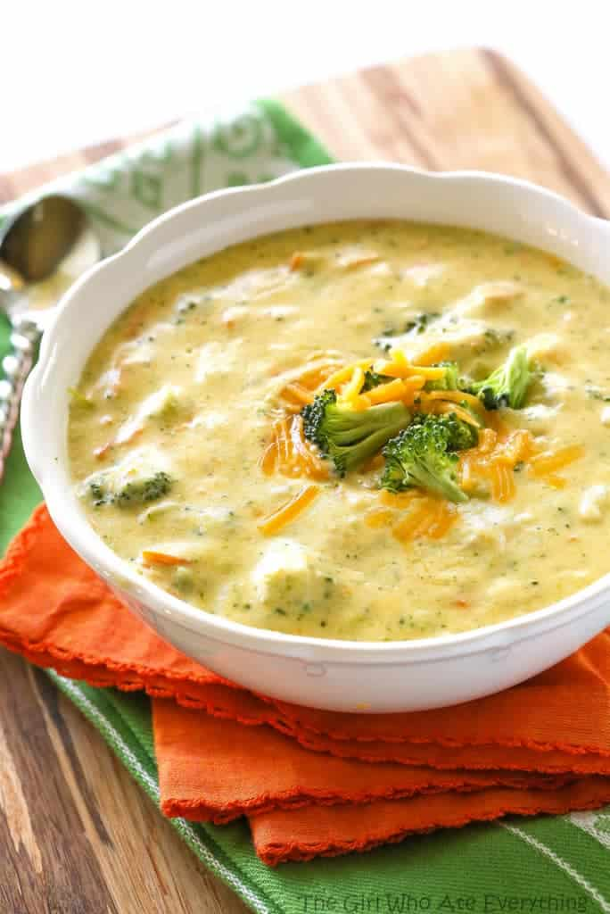

Broccoli Cheddar Soup

Making Broccoli Cheddar Soup
Making copycat Panera broccoli Cheddar soup is easier than you think.
You'll find a detailed ingredient list and step-by-step instructions in the recipe below.
Broccoli Cheddar Soup Ingredients
- Butter :You'll need butter to cook the onion and to make the roux.
- FlourThis broccoli Cheddar soup starts with a roux made with all-purpose flour and butter.
- Milk :A cup of milk is whisked into the roux, creating a rich and velvety soup.
- Stock :Use store-bought or homemade chicken stock.
- Vegetables : You'll need an onion, carrots, celery, and broccoli.
- Chesses : It's best to shred your own sharp Cheddar cheese, but you can use pre-shredded cheese if you must.
- seasonings :The broccoli Cheddar soup is simply seasoned with salt and black pepper.
How to Make Broccoli Cheddar Soup
- Cook the onion and set aside.
- Make the roux, then whisk in the milk.
- Add chicken stock and bring to a simmer and cook until thick.
- Stir in the broccoli, carrots, celery, and sautéed onion.
- Add the cheese and stir until melted, then season before serving.
Home Page
Back To The Top